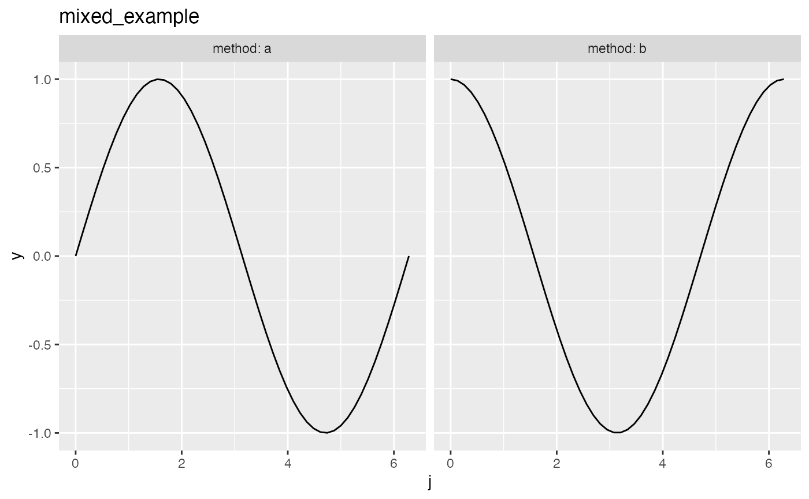
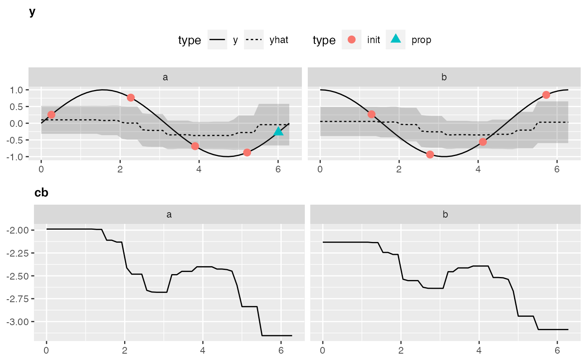
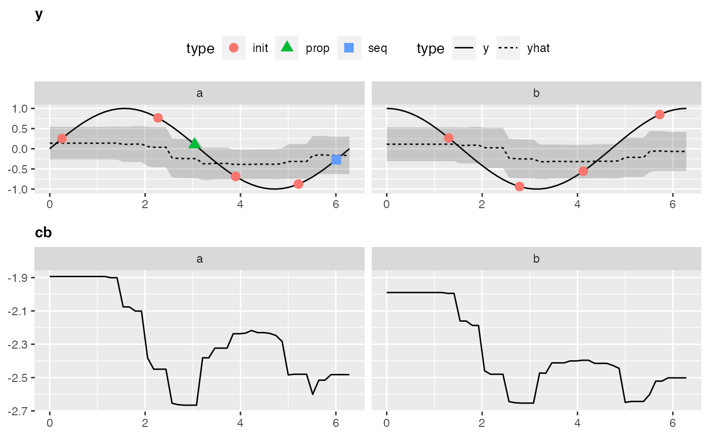
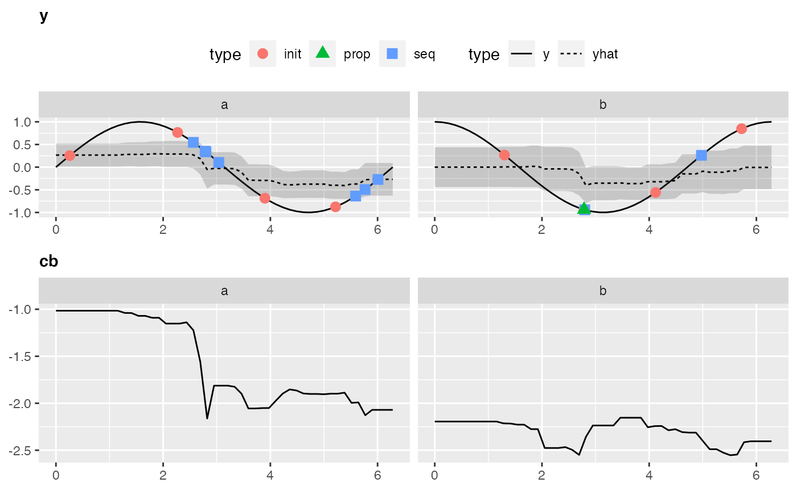

Mixed Space Optimization
Source:vignettes/supplementary/mixed_space_optimization.Rmd
mixed_space_optimization.RmdPurpose
This Vignette is supposed to give you an introduction to use mlrMBO for mixed-space optimization, meaning to optimize an objective function with a domain that is not only real-valued but also contains discrete values like names.
Mixed Space Optimization
Objective Function
We construct an exemplary objective function using smoof::makeSingleObjetiveFunction(). The par.set argument has to be a ParamSet object from the ParamHelpers package, which provides information about the parameters of the objective function and their constraints for optimization. The objective function will be 3-dimensional with the inputs j and method. j is in the interval \([0,2\pi]\) The Parameter method is categorical and can be either "a" or "b". In this case we want to minimize the function, so we have to set minimize = TRUE. As the parameters are of different types (e.g. numeric and categorical), the function expects a list instead of a vector as its argument, which is specified by has.simple.signature = FALSE. For further information about he smoof package we refer to the github page.
library(mlrMBO) library(ggplot2) fun = function(x) { j = x$j method = x$method perf = ifelse(method == "a", sin(j), cos(j)) return(perf) } objfun2 = makeSingleObjectiveFunction( name = "mixed_example", fn = fun, par.set = makeParamSet( makeNumericParam("j", lower = 0,upper = 2 * pi), makeDiscreteParam("method", values = c("a", "b")) ), has.simple.signature = FALSE, minimize = TRUE ) # visualize the function autoplot(objfun2)

Sorrogate Learner
For this kind of parameter space a regression method for the surrogate is necessary that supports factors. To list all mlr learners that support factors and uncertainty estimation you can run listLearners("regr", properties = c("factors", "se")). A popular choice for these scenarios is the Random Forest.
surr.rf = makeLearner("regr.randomForest", predict.type = "se")
Infill Criterion
Although technically possible the Expected Imrovement that we used for the numerical parameter space and the Kriging surrogate, the Confidence Bound (makeMBOInfillCritCB()) or also called statistical upper/lower bound is recommended for Random Forest regression. The reason is, that the Expected Improvement is founded on the Gaussian posterior distribution given by the Kriging estimator, which is not given by the Random Forest regression. For minimization the lower Confidence Bound is given by \(UCB(x) = \hat{\mu}(x) - \lambda \cdot \hat{s}(x)\). We set \(\lambda = 5\). For the infill criteria optimization we set opt.focussearch.points = 500, to increase the speed of the tutorial.
control2 = makeMBOControl() control2 = setMBOControlInfill( control = control2, crit = makeMBOInfillCritCB(cb.lambda = 5), opt.focussearch.points = 500 )
Termination
We want to stop after 10 MBO iterations, meaning 10 function evaluations in this example (not including the initial design):
control2 = setMBOControlTermination( control = control2, iters = 10 )
Initial Design
The initial design is set to size of 8:
design2 = generateDesign(n = 8, par.set = getParamSet(objfun2))
Note that the initial design has to be big enough to cover all discrete values and ideally all combinations of discrete values including integers. If we had 2 discrete variables one with 5 and one with 3 discrete values the initial design should be at least of size 15. Usually generateDesign() takes care that the points are spread uniformly.
Optimization
Finally, we start the optimization with mbo() with suppressed learner output from mlr and we print the result object to obtain the input that lead to the best objective:
# Surpresses output of learners mlr::configureMlr(show.info = FALSE, show.learner.output = FALSE, on.learner.warning = "quiet") run2 = mbo(objfun2, design = design2, learner = surr.rf, control = control2, show.info = TRUE) ## Computing y column(s) for design. Not provided. ## [mbo] 0: j=4.12; method=b : y = -0.558 : 0.0 secs : initdesign ## [mbo] 0: j=0.258; method=a : y = 0.255 : 0.0 secs : initdesign ## [mbo] 0: j=2.27; method=a : y = 0.766 : 0.0 secs : initdesign ## [mbo] 0: j=5.22; method=a : y = -0.876 : 0.0 secs : initdesign ## [mbo] 0: j=1.3; method=b : y = 0.267 : 0.0 secs : initdesign ## [mbo] 0: j=2.78; method=b : y = -0.937 : 0.0 secs : initdesign ## [mbo] 0: j=5.72; method=b : y = 0.848 : 0.0 secs : initdesign ## [mbo] 0: j=3.9; method=a : y = -0.686 : 0.0 secs : initdesign ## [mbo] 1: j=5.76; method=a : y = -0.498 : 0.0 secs : infill_cb ## [mbo] 2: j=2.96; method=a : y = 0.179 : 0.0 secs : infill_cb ## [mbo] 3: j=5.04; method=b : y = 0.321 : 0.0 secs : infill_cb ## [mbo] 4: j=5.48; method=a : y = -0.716 : 0.0 secs : infill_cb ## [mbo] 5: j=5.61; method=a : y = -0.623 : 0.0 secs : infill_cb ## [mbo] 6: j=5.68; method=a : y = -0.564 : 0.0 secs : infill_cb ## [mbo] 7: j=5.71; method=a : y = -0.541 : 0.0 secs : infill_cb ## [mbo] 8: j=5.72; method=a : y = -0.534 : 0.0 secs : infill_cb ## [mbo] 9: j=5.72; method=a : y = -0.531 : 0.0 secs : infill_cb ## [mbo] 10: j=5.74; method=a : y = -0.52 : 0.0 secs : infill_cb
The console output gives a live overview of all all evaluated points.
Let’s look at the parts of the result that tell us the optimal reached value and its corresponding setting:
run2$y ## [1] -0.9365681 run2$x ## $j ## [1] 2.783503 ## ## $method ## [1] "b"
Visualization
Visualization is only possible for 2-dimensional objective functions, of which one is the categorical dimension. Exactly like in our exemplary function.
Again, to obtain all the data that is necessary to generate the plot we have to call the optimization through exampleRun():
ex.run2 = exampleRun(objfun2, design = design2, learner = surr.rf, control = control2, show.info = FALSE)
And let’s visualize the results:
plotExampleRun(ex.run2, iters = c(1L, 2L, 10L), pause = FALSE) ## Loading required package: gridExtra

Improved Example for Dependent Parameters
Looking back at our example we notice that the behavior of the function for \(j\) totally changes depending on the chosen method. If such dependency is known beforehand it totally makes sense to let the surrogate know that \(j\) should be treated differently depending on the chosen method. This is done by introducing a new variable for each method.
wrap.fun = function(x) { x$j = if (x$method == "a") x$ja else x$jb x = x[setdiff(names(x), c("ja", "jb"))] fun(x) }
We have to also change the parameter space accordingly:
ps.wrap = makeParamSet( makeDiscreteParam("method", values = c("a", "b")), makeNumericParam("ja", lower = 0,upper = 2 * pi, requires = quote(method == "a")), makeNumericParam("jb", lower = 0,upper = 2 * pi, requires = quote(method == "b")) )
Let’s wrap this up in a new objective function using smoof:
objfun3 = makeSingleObjectiveFunction( name = "mixed_example: Dependent J", fn = wrap.fun, par.set = ps.wrap, has.simple.signature = FALSE, minimize = TRUE )
As we have dependent parameters now there will be missing values in the design for the surrogate. This means e.g. that when we use method=a the parameter jb will be NA. Hence, our learner for the surrogate has to be able to deal with missing values. The random forest is not natively able to do that but works perfect using the separate-class method Ding et. al. An investigation of missing data methods for classification trees applied to binary response data.. When no learner is supplied, mlrMBO takes care of that automatically, by using a random forest wrapped in an impute wrapper.
You can do it manually like this:
lrn = makeLearner("regr.randomForest", predict.type = "se", ntree = 200) lrn = makeImputeWrapper(lrn, classes = list(numeric = imputeMax(2), factor = imputeConstant("__miss__")))
Or you call makeMBOLearner which is exactly what happens when no learner is supplied to mbo() with the advantage that now you can change the parameters manually before calling mbo().
lrn = makeMBOLearner(control = control2, fun = objfun3, ntree = 200)
And now let’s directly run the optimization without further changing the control object from above.
design3 = generateDesign(n = 8, par.set = getParamSet(objfun3)) run3 = mbo(objfun3, learner = lrn, design = design3, control = control2, show.info = FALSE) run3$x ## $method ## [1] "a" ## ## $ja ## [1] 4.705077 ## ## $jb ## [1] NA run3$y ## [1] -0.9999733
Unfortunately our problem is now categorical and 3-dimensional to the eyes of mlrMBO so there is no implemented method to visualize the optimization. However we can analyze the residuals to see which surrogate was more accurate:
op2 = as.data.frame(run2$opt.path) op3 = as.data.frame(run3$opt.path) # residual variance of the surrogate model for the first example var(op2$mean - op2$y, na.rm = TRUE) ## [1] 0.1116086 # residual variance of the advanced surrogate model with independetly treat ed jaand jb var(op3$mean - op3$y, na.rm = TRUE) ## [1] 0.3793071
As you can see our new approach could improve the fit of the surrogate.
Remarks
In comparison to optimization on a purely numerical search space with functions that are not too crazy mixed space optimization comes with some twists that we want to mention here.
Random Forests as surrogate
The biggest drawback of using random forests versus Kriging is the lack of “spacial uncertainty”. Whereas in Kriging can model uncertainty in areas where no observations are made thanks to the co-variance that gets higher for points that are far away from already visited points, the random forest lacks of this information. For the random forest the uncertainty is based on the diversity of the results of the individual individual forests. Naturally, the diversity is higher in areas where the results of the objective function are diverse. For deterministic functions or functions with just a little noise this is mainly the case in the proximity of steep slopes of the objective function. This can lead to proposed points that are located at slopes but not actually in the valley. Furthermore the diversity of the prediction of the individual trees can also be quite low outside the area of observed values leading to less proposals in the area between proposed points and the actual boundaries of the search space. To combat this problem it can make sense to manually add points at the boundaries of the search space to the initial design.